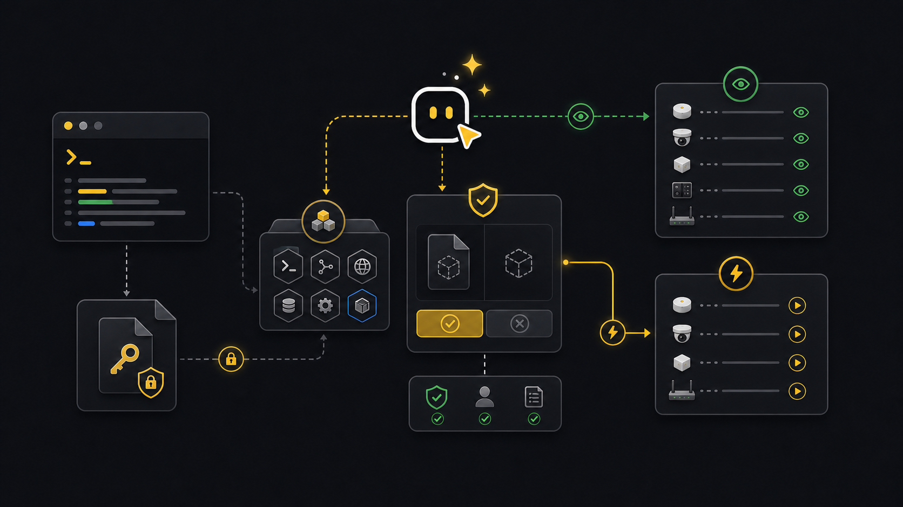

Agents
Agent guidance.
Use this when Codex, Claude Code, Copilot Agent mode, or another shell-capable agent is running xyte-cli for you.
Agent setup
Use a shell-capable agent. It needs terminal access in the workspace, permission to run xyte-cli, and a safe way to read the API key without seeing the key text in chat.
| Agent type | What it needs | How it should run xyte-cli |
|---|---|---|
| Codex or Claude Code | Workspace terminal access and permission to run commands. | Inspect setup, run commands, create files, and ask before write-capable apply steps. |
| Copilot Agent mode | A repository workspace with terminal or CI job access. | Prepare commands, config, and job snippets; use CI secrets for API keys. |
| Chat-only assistant | No shell access. | Explain commands only. A person still runs them in a terminal. |
| CI agent | Node.js, pinned CLI package, and XYTE_CLI_KEY as a secret. | Run non-interactive setup, write artifacts, and stop at plan for changes. |
The agent must be able to run xyte-cli, read command output, and write artifacts such as JSON, NDJSON, CSV, Markdown, or run bundles.
Give the agent a key-file path, stdin secret, or secret manager command. Do not paste the API key into chat.
For moves, claims, remediation, imports, or other tenant changes, the agent should stop after the plan and wait for approval.
The agent should end with commands run, files written, what changed, what did not change, and the next decision.
Do not paste
- API keys, bearer tokens, cookies, or browser session data.
- Customer exports or tenant-sensitive data unless the task requires that data in the workspace.
- Guessed device ids, incident ids, proxy ids, or space ids.
- Approval to apply a tenant change before the target and effect are clear.
What agents do
An agent should operate the same CLI a person would use. It should show the command it ran, use structured output when it needs to reason over results, and stop when the next step needs a human decision.
Workflow
- GoalUnderstand the taskStart from the operator outcome, not from a guessed endpoint.
- ReadyCheck setupConfirm CLI, tenant, and connectivity before interpreting data.
- ReadInspect current stateWatch incidents, inspect fleet, or describe endpoint contracts.
- GatePlan writesShow the proposed change and wait for explicit approval.
- HandoffReport pathsList commands run, files written, and the next safe action.
Ask an agent
Use short, plain requests. Do not preload the prompt with IDs unless you already have them. Let the agent discover context and ask only for missing inputs.
Readiness prompt
Use xyte-cli to check whether this machine can run tenant operations.Incident triage prompt
Use xyte-cli to show active incidents and what changed since yesterday.Report prompt
Use xyte-cli to make today's fleet report and tell me where it saved the files.Write plan prompt
Use xyte-cli to investigate a broken room or device and prepare a remediation plan. Do not apply changes.CI job prompt
Use xyte-cli to set up a repeatable CI or agent job for fleet reporting.Terminal and CI
The same work should be reproducible without an agent. In a terminal, run the command directly. In CI, use non-interactive setup, JSON output, saved artifacts, and plan-only flows unless the job has a separate approval step.
# Terminal
xyte-cli ops inspect fleet \
--tenant <profile-label> \
--render json \
--out ./artifacts/fleet.json
# CI
printf "%s" "$XYTE_CLI_KEY" | npx -y @xyteai/cli@0.11.0 setup run \
--non-interactive \
--key-stdin \
--format json
npx -y @xyteai/cli@0.11.0 flow run flow.daily-deep-dive-report \
--tenant default \
--plan \
--strict-jsonSetup path
When setup is missing, the agent should ask for a path to an API key file outside the workspace. It should not ask for the key text. If the user manages more than one Xyte connection, ask which local profile label to use.
xyte-cli doctor environment --format json
xyte-cli setup run \
--non-interactive \
--key-file <path-outside-workspace> \
--format json
xyte-cli setup status --format text
xyte-cli init --scope project --agents all --force --no-setupWrite boundary
For commands that can change tenant state, the agent should plan first. Apply is a separate step after the operator reviews the target, effect, and resume path.
xyte-cli flow run <flow-id> --tenant <profile-label> --plan
xyte-cli flow run <flow-id> --tenant <profile-label> --apply --resume <run-id-or-path>- Requests that only inspect tenant state can run immediately after readiness checks.
- Move, claim, close, update, send-command, and import actions need approval.
- After a write, the agent should read back the changed state.
Real-life examples
Ask: "Show me what changed in active incidents since yesterday and save fleet context." The agent runs watch once, saves fleet JSON, and summarizes changes.
Ask: "Use xyte-cli to create this week's deep-dive report." The agent saves source JSON and a Markdown or PDF report.
Ask: "Help me move devices after the room import." The agent exports current devices and spaces, builds a move CSV, and stops at dry run.
Ask: "Use xyte-cli to plan device claiming from this spreadsheet." The agent chooses native/direct or Edge, prepares rows, explains missing fields, and stops before the claim runs.
Handoff
A useful agent answer should end with what changed, what did not change, where the files are, and what the next decision is.
Profile checked: default
Commands run: setup status, config doctor, ops inspect fleet
Files written:
./artifacts/fleet.json
./reports/xyte-daily.md
Next action: review the report or ask for remediation planning.